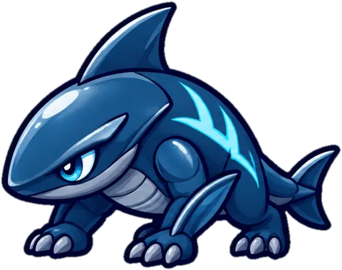

 WaterDark
WaterDarkTap a stage to read its story.
Finlet in the Poison Marsh is a dark blue compact shark that has adapted to the murky shallow waters, its eyes narrowed against the stinging mist. It skims low through the surface film of the marsh, eating the toxic water-skaters that other creatures avoid. Its stubby legs let it haul out onto mud banks where it rests with its mouth open, letting the warm marsh air dry its teeth. Children who know the marsh paths say a Finlet following you means you are on the safe route - it avoids the patches where the ground is not solid.
Field note: Finlet always avoids the soft mud patches - locals follow its tracks to find the safest marsh paths.
Poison Marsh. Finlet and its family are found in the Poison Marsh. See everyone who lives there.
Share a Bond Food that matches its types to become friends. Finlet loves:
A Bond Food is not a trick. It joins your spirit with the Kimuro's spirit, and only when it chooses you.
Print the Kimuro adventure packs: mazes, cards, a board game and Bond Mark medals.
See the printable packs